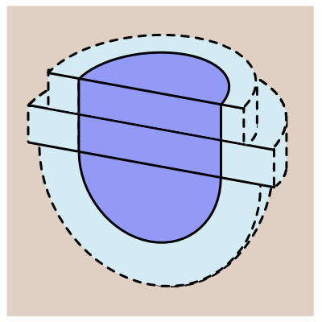
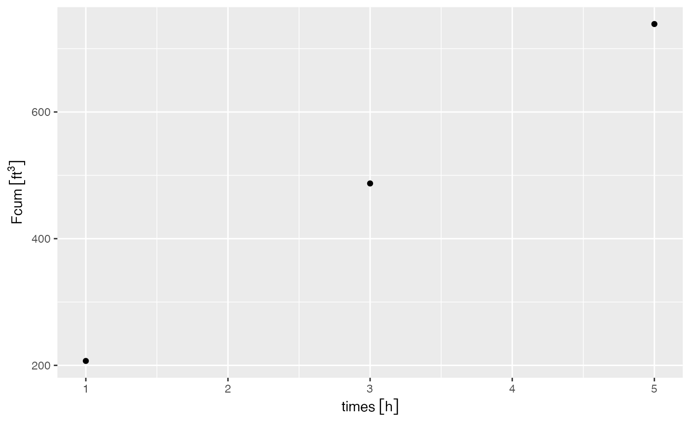
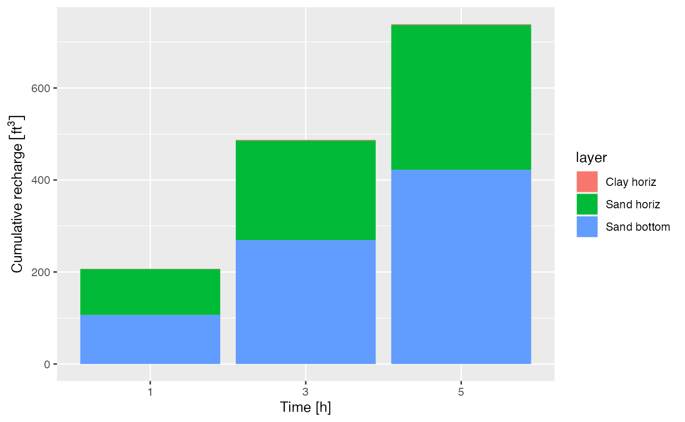

recharge-pit-models
recharge-pit-models.RmdThis package provides an analytical method to estimate the recharge from subsurface pits. Method provide idealized geometries of the pit and/or the recharge behavior in order to make the mathematics more tractable. The basic assumptions about flow within each of the models are those assumptions made by the Green-Ampt method:
- Homogeneous soil with initial water content (theta_0)
- Constant pressure head (h_0) at the wetting front
- Saturated soil above above wetting front
- Continuous supply of water with constant head (h_b) at the soil surface boundary
With respect to the pits, further assumptions are made as described below.
Rectangular pit with perpendicular flow
In this case, the pit is represented as a rectangular volume with a length, width, and depth. All flow occurs perpendicular to the pit. Therefore the calculated recharge underestimates the actual recharge because this approach fails to account for (e.g.) diagonal flow away from the corners of the pit, which may represent considerable flow
In order to set up the model, the dimensions of the pit must be set
as units objects. For example:
## udunits database from /Library/Frameworks/R.framework/Versions/4.3-arm64/Resources/library/units/share/udunits/udunits2.xmlAdditionally, initial water content (theta_0), porosity
(theta_s), saturated hydraulic conductivity
(Ksat), and the time(s) at which the infiltration should be
estimated (times).
theta_0 <- 0.2 # unitless
theta_s <- 0.35 # unitless
Ksat <- set_units(0.2, "cm/h") # length / time
h_0 <- set_units(-10, "cm") # hydraulic head (length)
times <- set_units(1,"hr")These values are then provides to the function
get_pit_recharge_rectangular as:
library(rechargepits)
get_pit_recharge_rectangular(height, length, width, theta_s, Ksat, theta_0, h_0, times)## 9.301142 [ft^3]Note that this function assumes the pit is filled with water beginning at t = 0, and that infiltration does not lead to a reduction in water in the pit over time (i.e., constant head profile within the pit throughout the infiltration event).
Also note that this approach is equivalent to using the built-in
functions to estimate pit recharge across vertical transects of the
walls (get_greenampt_horiz_flow_integrated) and point
recharge downward from the bottom of the pit
(get_greenampt_flow_numerical). Multiplying these values to
convert to volumes of recharge gives the final result.
h_b <- height
# get horizontal flow:
Fv <- get_greenampt_horiz_flow_integrated(theta_0, theta_s, Ksat, h_b, h_0, times = times)
flow_horizontal <- Fv * (width * 2 + length * 2)
fcum_vert <- get_greenampt_flow_numerical(theta_0, theta_s, Ksat, h_b, h_0, times)
flow_vertical <- fcum_vert * width * length
flow_vertical <- units::set_units(flow_vertical, units(flow_horizontal))
flow <- flow_horizontal + flow_vertical
flow## 9.301142 [ft^3]Cylindrical pit with half-spherical bottom flow
Here the pit is represented by a radius and a depth. Water flows radially outwards creating an expanding cylinder along the depth of the pit. At the bottom of the pit, water flows radially outward to create a downward half-sphere. Gravity (i.e., the elevation gradient) is fully ignored to make the math tractable. This may be a reasonable assumption if the pit is deep enough that the pressure head gradient is much greater than 1.

Model with two soil layers
Note that different soil layers can be modeled provided no flowlines intersect any soil boundary. In other words, it is possible to model multiple soil layers above the bottom of the pit as all flow in this region is horizontal. However, a confining layer below the bottom of the pit could not be modeled. Here, we model a recharge pit that is 6 ft deep with a 2 ft radius. The pit is dug in a 2-layer soil profile with a low-conductivity (Clay) surface layer of 2 ft underlain by a high-conductivity layer (Sand) that extends below the bottom of the pit.
We get the values for \(K_{sat}\)
for each from rawls_soils:
library(dplyr)
rawls_soils %>%
filter(texture_class %in% c("Sand","Clay")) %>%
select(texture_class, Ksat_cm_per_h, porosity_effective)## # A tibble: 2 × 3
## texture_class Ksat_cm_per_h porosity_effective
## <chr> <dbl> <dbl>
## 1 Sand 21 0.417
## 2 Clay 0.06 0.385We then use get_greenampt_cyl_flow_integrated to model
horizontal cylindrical flow through each layer, and
get_greenampt_hsphere_numerical to obtain flow out the
bottom.
For the clay top layer, we use a bottom pressure head of 2 ft (\(h_b = 2 ft\)), a depth of 2 ft (\(d = 2 ft\)), a radius of 2 ft (\(r_b = 2 ft\)) and a hydraulic conductivity of clay (\(K_{sat} = 0.06 cm/h\)). We assume a porosity of 0.4, initial volumetric water content of 0.2. And finally, we discretize the layer into 2 sections such that the radial outward flow is calculated in 1 foot increments (2 ft depth / 2 sections = 1 ft/section). We assume a small negative pressure head in the soil.
times <- set_units(c(1,3,5), "hr") # units of length^2
Fcum_clay_horiz <- get_greenampt_cyl_flow_integrated(theta_0 = 0.2, # unitless
theta_s = 0.4,
Ksat = set_units(0.06, "cm/h"),
h_b = set_units(2, "ft"),
h_0 = set_units(-10, "cm"),
r_b = set_units(2, "ft"),
times = times,
F_units = "ft^3",
num_sections = 2,
d = set_units(2, "ft"))For the sand layer, we use a bottom pressure head of 6 ft (\(h_b = 6 ft\)), a depth of 4 ft (\(d = 4 ft\)), a radius of 2 ft (\(r_b = 2 ft\)) and a hydraulic conductivity of sand (\(K_{sat} = 21 cm/h\)). We keep the same porosity and initial VWC, and again use 1 foot discrete sections (i.e., 4 sections).
Fcum_sand_horiz <- get_greenampt_cyl_flow_integrated(theta_0 = 0.2, # unitless
theta_s = 0.4,
Ksat = set_units(23, "cm/h"),
h_b = set_units(6, "ft"),
h_0 = set_units(-10, "cm"),
r_b = set_units(2, "ft"),
times = times,
F_units = "ft^3",
num_sections = 4,
d = set_units(4, "ft"))Next, we get the flow from the bottom. This requires the same inputs for the sand layer at a depth of 6 ft.
Fcum_sand_bottom <- get_greenampt_hsphere_numerical(theta_0 = 0.2, # unitless
theta_s = 0.4,
Ksat = set_units(23, "cm/h"),
h_b = set_units(6, "ft"),
h_0 = set_units(-10, "cm"),
r_b = set_units(2, "ft"),
times = times,
F_units = "ft^3")Finally, we obtain the total recharge as a sum of the above three outputs:
library(ggplot2)
Fcum <- Fcum_clay_horiz + Fcum_sand_horiz + Fcum_sand_bottom
ggplot() + geom_point(aes(times, Fcum))
We can view the contribution from each of the models by combining the
data into a data.frame and plotting:
library(tidyr)
library(dplyr)
df <- as.data.frame(bind_cols(times_h = rep(times, 3),
recharge_cu_ft = c(Fcum_clay_horiz,Fcum_sand_horiz, Fcum_sand_bottom),
layer = rep(c("Clay horiz", "Sand horiz", "Sand bottom"), each = length(times))))
df$layer <- factor(df$layer, levels = c("Clay horiz", "Sand horiz", "Sand bottom"))
ggplot(df) +
geom_bar(aes(as.character(times_h), recharge_cu_ft, fill = layer), stat = 'identity') +
xlab("Time [h]") + ylab("Cumulative recharge")